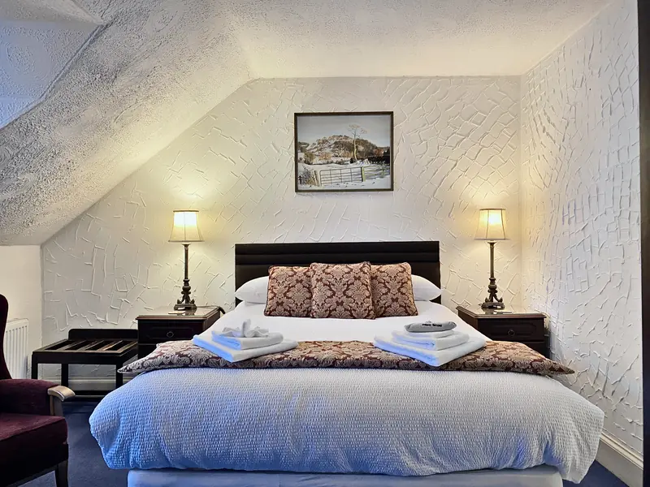
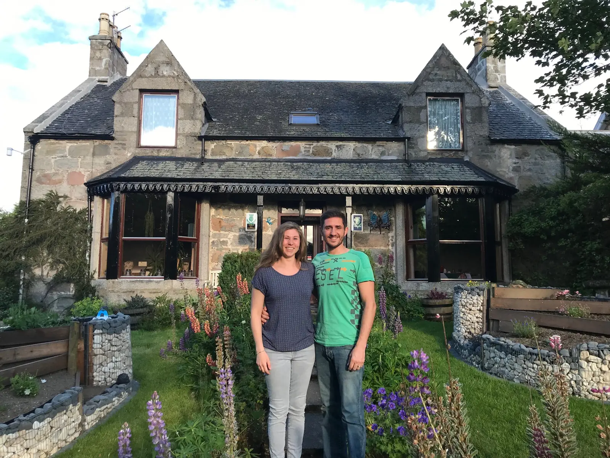
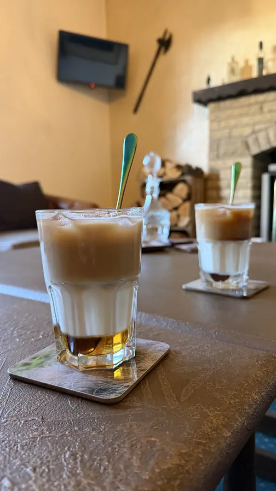
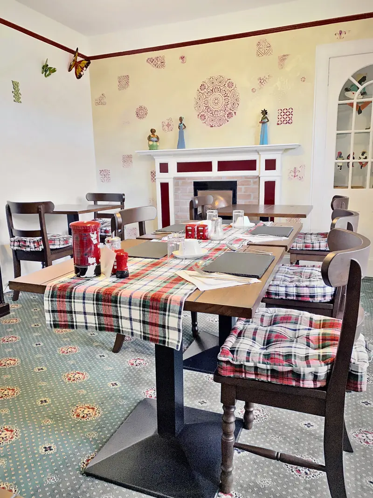
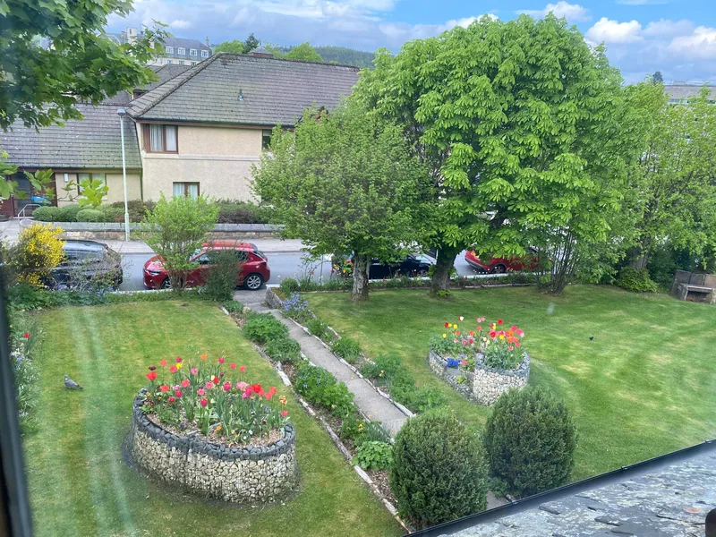
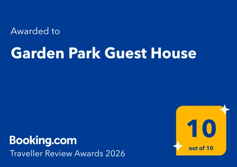

Deluxe
Grant
- King-size bed
- 1.8 m shower with rain shower and hand shower
- Upstairs

Sarah and Daniel welcome you to Garden Park, a welcoming Guest House in Grantown-on-Spey. Built in 1868 and set in half an acre of gardens, we are just a three-minute walk from the High Street. We offer comfortable bed and breakfast in a relaxed, homely atmosphere, and we look forward to having you as our Guest.
About us
Sarah and Daniel welcome you to Grantown-on-Spey, in the beautiful Highlands of Scotland, and to the elegant yet homely Garden Park Guest House. Built in 1868, it is quietly set in half an acre of well-stocked gardens, close to Grantown Golf Course, the Speyside river walk and the pine forests. The High Street, with its family-owned shops, restaurants and pubs, is only about a three-minute walk away.
Grantown-on-Spey is part of the Cairngorms National Park. It connects Strathspey and Badenoch, Speyside, Moray, Nairnshire and the Cairngorms, which makes it one of the best bases for a comfortable, longer stay.
Licence, Home Sharing, No. HI-70000-R
Rooms
All six rooms are en-suite, individually furnished and kept to a high standard. Good quality beds, central heating and electrically heated underblankets make sure you sleep well. Every room has a hairdryer, a TV and a selection of tea and coffee. Single occupancy is possible in every room.

Deluxe

Superior


Double · ground floor

Twin · ground floor
Room rates vary by season, room type and length of stay, and you might be pleasantly surprised by our rates for longer stays. Please check live availability for current prices.
Our sister cottage
Our self-catering cottage in the grounds of Garden Park, for two adults plus up to two children up to 10, or one child up to 12. It is at road level with a walk-in shower, and the raised double bed leaves plenty of room for luggage underneath. Butterfly Cottage is also the only place where we can welcome your dog.
Licence, Secondary Letting HI-70001-R
Please ask about our longer-term stay rates, out-of-season offers and group rates. We can also offer exclusive use for family celebrations, weddings and other group events. Just get in touch and let us help you plan your perfect Highland event.
Breakfast
We focus on the two Bs that matter most, a good bed and a proper breakfast.
Each morning, you can choose exactly what you would like from our breakfast menu. We cook each breakfast to order, just for you, which helps us avoid food waste. Our mushrooms and tomatoes are placed in the oven 90 minutes beforehand, so they are ready to enjoy with your freshly cooked breakfast.


During your stay
After a long drive, nobody wants to go out again. That's why we offer our Wee Fancy Brügel for pre-order. A proper Swiss rustic comfort meal on a crusty stone-baked sourdough baguette, in four varieties. Not your average snack, but a full-sized meal for real hunger.
Monday to Saturday, pre-order at least 24 hours before arrival, exclusively for Guests of Garden Park and Butterfly Cottage. You will find all the details in the PDF we send with your booking confirmation.
Fancy a coffee after a day out? We make Iced Coffee, Cappuccino, Latte Macchiato and Espresso for our Guests.
And if you would like to take a little piece of Garden Park home, we also have a few small souvenirs from Sarah and Daniel, from Highland honey to coat hooks made from old whisky barrels.




Packages & news

Three generations. One unforgettable Scottish holiday.
Bring the whole family together for a special break in the Scottish Highlands. Book three rooms for four nights and enjoy the third room for the children (aged 6–11) completely free of charge.
With separate rooms, everyone has their own space. And if Mum and Dad fancy a little extra privacy, they could even make Butterfly Cottage their own retreat. While the grandparents create precious memories with the grandchildren, Mum and Dad can enjoy some well-deserved time together.
A little more space, a little more time together, and memories to last a lifetime.
Minimum three rooms and four nights. Subject to availability. Advance booking required. Please contact us by email to arrange your Generation Getaway.
Email us26 – 30 December 2026
The days between Christmas and Hogmanay. The perfect time to slow down.
Stay for 3 nights and pay for just 2, or enjoy 4 nights for the price of 3, in our MacDonald (Superior) or Grant (Deluxe) rooms.
Between Christmas and Hogmanay, nobody really knows what day it is anyway. So why not escape to the Scottish Highlands and simply enjoy a few days with nowhere in particular to be?
Take long walks through Anagach Woods, return to the warmth of the lounge, curl up with a good book or enjoy a relaxed board game by the fire. Start your mornings with a proper breakfast and leave the to-do list firmly behind.
No plans. No rush. Just a little Highland winter escape.
Offer valid for stays between 26 and 30 December 2026. Subject to availability.
Check Twixmas availability26 December 2026 – 4 January 2027
Celebrate on Thursday. Take your time on Friday. Enjoy the weekend.
Why rush home after Hogmanay? Join us in Grantown-on-Spey and welcome the New Year in true Highland style. Hogmanay falls on a Thursday this year, giving you the perfect excuse to turn the celebrations into a long weekend.
Grantown usually celebrates with a traditional street party on The Square, just a short stroll from our front door. No taxi, no queues, just a few minutes' walk back to a warm and comfortable bed.
And the best part? There's no need to rush off on Friday morning. Enjoy a leisurely breakfast, explore the winter Highlands and make the most of the long weekend.
Celebrate Hogmanay. Sleep in. Stay a little longer.
We're open from 26 December 2026 until 4 January 2027.
Check Hogmanay availabilityThe area
Founded in the 18th century, Grantown is the historical capital of Strathspey and a near-perfect Highland base for day trips, whisky, nature and coast. Since 2003 the town has been part of the Cairngorms National Park, the largest national park in the United Kingdom.
Anagach Woods and the Speyside Way begin minutes from the door, and we are the Guest House closest to the route. Red deer, otters, dolphins, golden eagles, osprey and pine martens all live in the region, and the RSPB centre at Loch Garten is a short drive away.
Nine distilleries and a working cooperage on the Malt Whisky Trail, including The Cairn, Grantown's own distillery. You will find more information on maltwhiskytrail.com.
Eight courses within easy reach, in Grantown, Carrbridge, Boat of Garten, Abernethy, Newtonmore, Kingussie, Aviemore and Craggan. We have lockable storage and drying facilities for clubs and boots. Golf tips on our map.
Ballindalloch Castle, Cawdor Castle and the battlefield at Culloden are all within an hour. Grantown Museum is just around the corner.
We don't serve lunch or dinner, but every booking receives a PDF with all the local restaurants and cafés. Whether you are vegan or love meat or fish, Grantown offers a great variety, and we are always happy to share our personal favourites.
Fishing and stalking can be arranged with a local guide during your stay. Horse riding, pony trekking, birdwatching, skiing, snowboarding and white-water rafting are all nearby. Fishing tips on our map.
Our interactive map features 50+ hand-picked destinations and ready-made day trip ideas, organised into 8 categories across 4 clear, easy-to-use maps.
Explore the interactive map of Strathspey & Badenoch, Speyside, the Cairngorms and the Moray Coast.
Open the interactive mapGreen Policy
Grantown-on-Spey is made for staying a little longer. From here, day trips go out in every direction like the points of a star, to Speyside and its distilleries, Aviemore and the Cairngorm mountains, Tomintoul, Elgin, Nairn and the Moray coast, and Inverness, all under an hour away. You unpack once and spend your days exploring instead of packing and driving.
We work closely with Green Tourism and hold their Gold award. Since the 2024 season, solar panels on the south and south-east sides of the house help power Garden Park, and we have replaced all water tanks. If you drive an electric car, you can charge it at our charging station with the Tap Electric app. We also have our own herb garden and a bee-friendly flower garden, buy local where we can, keep packaging and waste low and use steam cleaning where possible.
Every extra night means one less round of washing linen and towels. This can help reduce water, energy and detergent use, while giving you more time to get to know Grantown-on-Spey and the Cairngorms instead of rushing through.

Good to know
No surprises, no small print buried in a PDF. If anything here needs discussing, simply call or write to us.
We are open from March to October, and from 26 December to 4 January over Christmas and New Year. The house is closed at other times from November to February, as our old granite house takes a long time to heat.
On request, we can open the house in winter for groups of at least six people staying a minimum of three nights.
Bookings are confirmed with a deposit for the first night per room. We accept cash (GBP), Mastercard and Visa, bank transfer and Stripe payment links. Contactless payment is also possible.
Check-in is between 4pm and 7pm, check-out by 10am. Each day you choose your breakfast and your preferred time on our breakfast card.
If you cancel 14 or more days before arrival, the cancellation charge is £14 per room.
If you cancel between 3 and 13 days before arrival, the cancellation charge is £50 per room.
If you cancel less than 3 days before arrival, the cancellation charge is 75% of the total booking cost.
If you do not arrive or reduce your booking after your arrival date, the full cost of the booking is charged.
For bookings made more than 4 days before arrival, a deposit of the first night is due, and the balance 9 days before arrival. For bookings over £1,000 the deposit is 40%. Bookings made 4 days or less before arrival are paid in full and cannot be refunded. We strongly recommend travel insurance.
The house is slightly raised, about 30 metres from the road. You can reach the entrance by a gentle footpath or by 12 shallow steps. The house is not wheelchair accessible.
Guests using a rollator or walking aid can access the ground floor, and we recommend Room Sutherland, which has a walk-in shower. Room Mathieson is also on the ground floor, but its shower has a 15 cm step.
Travelling with your dog? They are very welcome in Butterfly Cottage, where there is room for the whole family to feel at home. A pet fee of £39 applies per booking, per week.
Drying facilities and lockable storage on site, and we are the Guest House closest to the Speyside Way. Luggage transfer to your next accommodation can be arranged, just ask us before you arrive. Groups of up to 14 are welcome by arrangement.
Children aged 8 and over are welcome. Children up to 15 sharing your room stay at a reduced rate.
Every room has a complimentary beverage tray, bathroom toiletries, a TV and a hairdryer. You are very welcome to spend time in our residents' lounge, where you'll find board games, books and information about the local area. On colder days, the log-burning stove keeps the room warm and cosy.
Gallery







Your hosts
Sarah and Daniel look forward to welcoming you to Garden Park. We are happy to help with local ideas, practical travel tips and our personal favourites, so you make the most of your Highland stay.

And Lucy? Our Dalmatian lives with us in our private part of the house and only very rarely comes into the Guest House. If you would like to meet her, just ask, and she will happily come out to say hello.
We speak English, German, Swiss German and Italian.
Guest reviews
5/ 5
From 240+ verified Guest reviews · read them all
“Spotlessly clean, peaceful location just a very short walk to facilities. Host very welcoming and helpful.”
“The breakfast was first-class, the hosts were welcoming and friendly.”
„Würden euch jeder Zeit weiter empfehlen. Es waren schöne Tage, die wir sehr genossen haben.“
„Wir vermissen euer Frühstück mit der tollen Auswahl und dem selbstgebackenen Brot. Und eure Herzlichkeit …“

Traveller Review Award 2026Booking.com, 10 out of 10.Booking direct means no platform commission, and you deal directly with us.
Check availabilityFAQ
Grantown sits in the centre of multiple regions. Guests can easily make star-shaped day trips into Speyside, the Cairngorms, Moray Coast, Inverness area, Strathspey and Aberdeenshire. Many highlights are reachable within 20–50 minutes. Every day can offer completely different scenery and experiences. Fancy some ideas for your planning? Sarah and Daniel's interactive map could be a good help.
Yes. Garden Park is located in a quiet side street. The town centre is approximately 3 minutes away on foot. All restaurants can be reached within 1–10 minutes walking distance. Several are less than 4 minutes away.
Approximately 50 minutes by car. You can reach Inverness either via Nairn or via the A9. Public transport is also available, and regular buses connect Grantown-on-Spey and Inverness.
Yes. Fresh vegetarian and vegan options are available every day.
Of course you can do the Speyside Malt Whisky Trail in one day. The real question is, will you remember it the next day? 😄 With so many distilleries, visitor centres and tastings, time flies. Our advice is to visit fewer distilleries and enjoy each one more. You will find them all on our Speyside Distilleries map. Daniel also offers a driver service for up to 4 people on request. As dates fill up quickly, especially in peak season, booking at least 6 weeks in advance is recommended.
Yes, really, and they have never charged an entry fee! The best location is Chanonry Point near Fortrose, where Bottlenose Dolphins are regularly spotted, especially 1.5–2 hours after low tide. Bring binoculars and be patient, the reward is worth it.
To avoid third-party scam sites or unnecessary extra processing fees, you should only apply through official UK government channels. You can apply online directly on the official UK government website at gov.uk/eta/apply, or use the official 'UK ETA' app (Apple App Store and Google Play Store), which lets you easily scan your passport's biometric chip and your face. Please note that the official UK ETA application costs £20. Always check that the website address ends exactly in .gov.uk, as independent websites often look identical to official government pages but charge large hidden fees on top of the standard rate.
Who knows? That wasn't very funny, was it? 😉 The truth is nobody can answer that question. Scotland has more than 140 distilleries and everyone has different tastes. You may love a smoky island whisky or perhaps you are completely new to whisky. If so, Speyside is one of the best places to begin. Why not stay with us and explore more than 50 distilleries throughout Speyside and Strathspey? A wonderful adventure for whisky lovers and future whisky lovers alike. And if gin is more your spirit, you're in luck, as the Cairngorms and the surrounding area are home to some excellent gins too.
Yes, the region produces excellent, internationally award-winning gin. Kinrara, for example, won “World's Best Signature Botanical” at the World Gin Awards 2025 with its Caper Artist Edition. Or there is Glenrinnes, with its modern distillery and 100% organic certification. And by the way, Kinrara are still on a roll in 2026, taking the title “World's Best Gin Design” at the World Drinks Awards in London.
More questions and answers in our interactive map.
Contact
+44 1479 873235
relax@garden-park.co.uk
what3words include.milky.baths
Inverness and the Moray coast are about 50 minutes away by car. Coming by car, ferry or train, or getting around without a car by bus and taxi, you will find everything in our interactive map.
Getting to Grantown-on-Spey